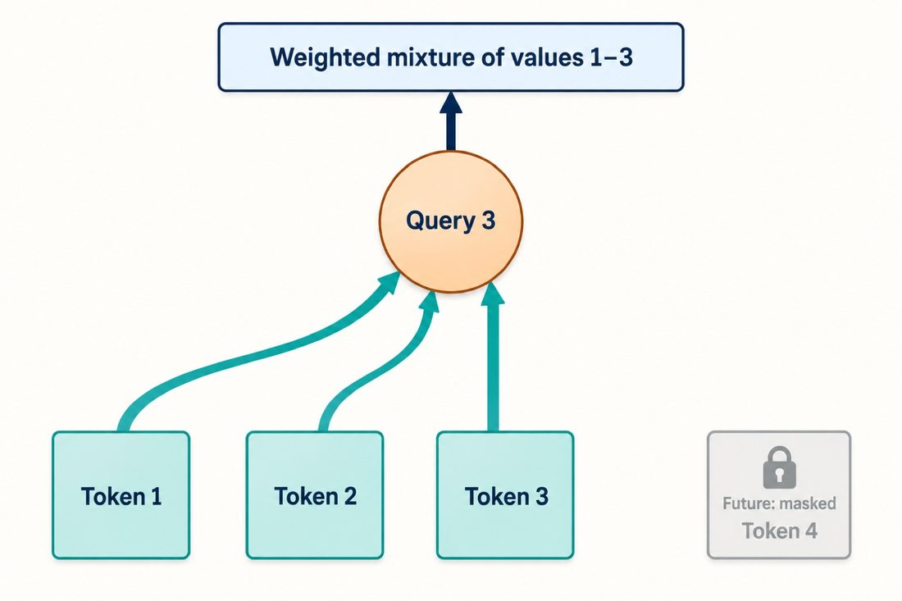

Chapter 32 · Understanding the Transformer from Scratch第 32 章
32.3By hand: causal attention over 3 positions手算：3 个位置的因果注意力
with q = k = (1, 2, 3) and values (10, 20, 30), the three outputs under a causal mask are 10, 18.81 and 29.48.
q = k = (1, 2, 3)，值 (10, 20, 30)，因果掩码下三个位置的输出是 10、18.81、29.48。
One dimension, no scaling needed (√1 = 1):
一维、不需要缩放（√1 = 1）：
- position 1 sees only itself: weight [1], output 10;
- position 2: scores 2×1 = 2, 2×2 = 4, softmax → 0.119, 0.881, output 0.119×10 + 0.881×20 = 18.81;
- position 3: scores 3, 6, 9, softmax → 0.002, 0.047, 0.950, output about 29.48.
- 位置 1 只能看自己：权重 [1]，输出 10；
- 位置 2：分数 2×1 = 2、2×2 = 4，softmax → 0.119、0.881，输出 0.119×10 + 0.881×20 = 18.81；
- 位置 3：分数 3、6、9，softmax → 0.002、0.047、0.950，输出约 29.48。
